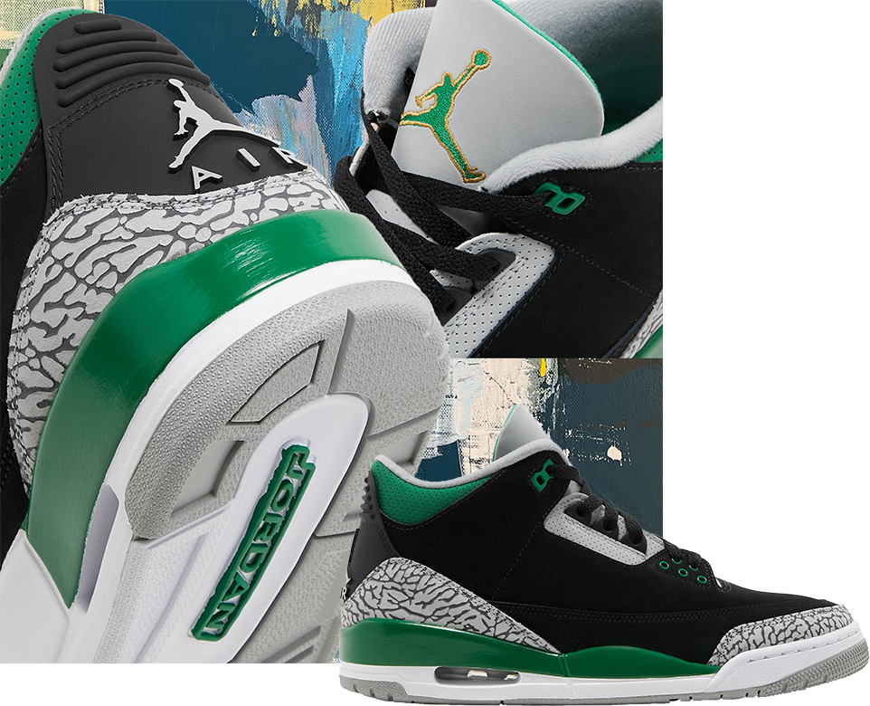

Just Dropped
Air Jordan 3 Retro 'Pine Green'
The Air Jordan 3 Retro ‘Pine Green’ combines OG-style color blocking the shoe with updated materials. A smoothed Black textured nubuck replaces the traditional leather construction on the upper which is now enlivened with verdant green accents on the molded eyelets, of perforated leather collar, and embroidered Jumpman branding atop the tongue. The Forefoot and heel overlays are rendered in the 3’s signature elephant print, while its molded heel tab displays a second Jumpman icon. The retro silhouette is mounted on a strongly white polyurethane midsole with contrast green detailing and visible Air-sole cushioning that's under the heel.
Buy New - $199 Buy Used - $155